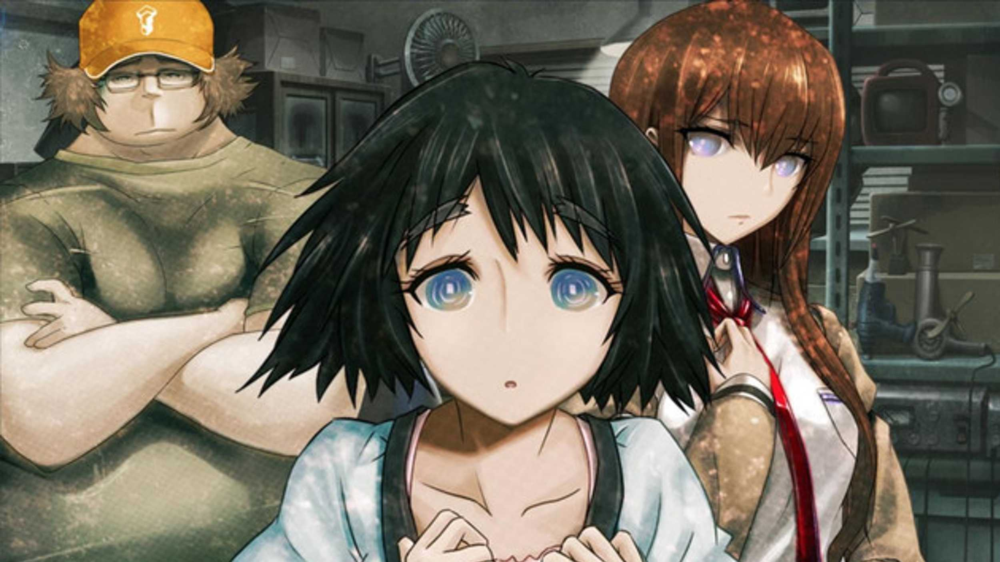
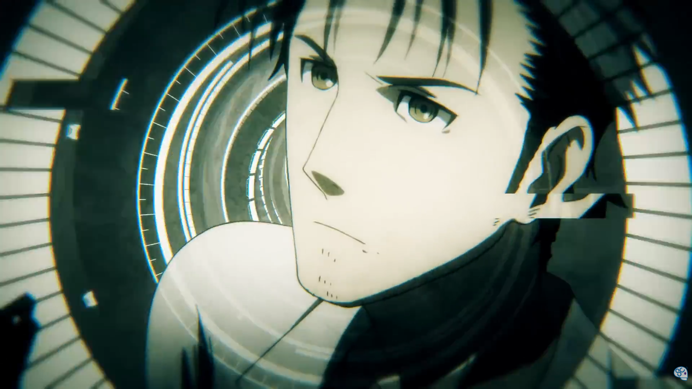
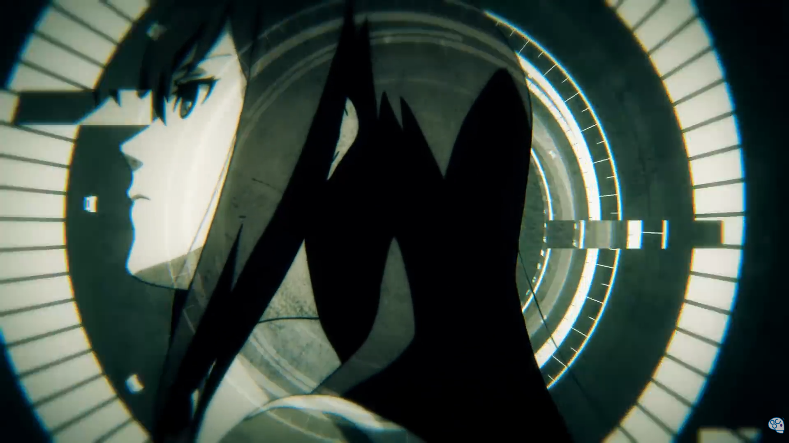
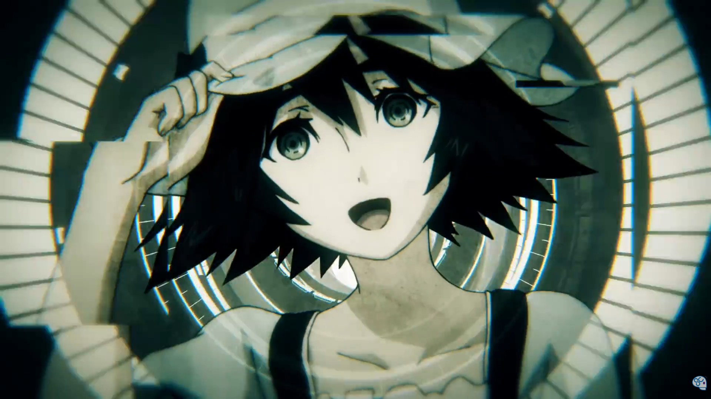
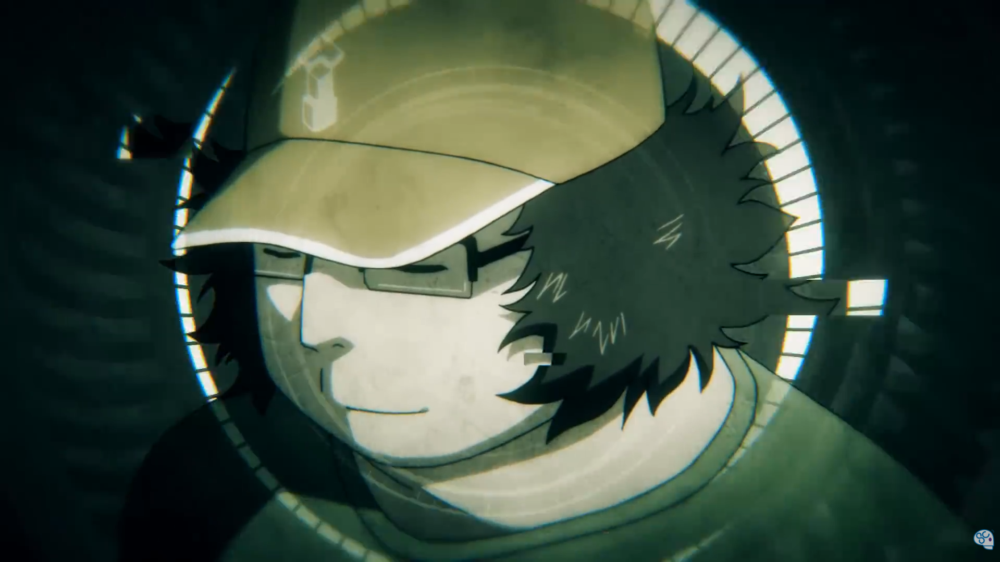
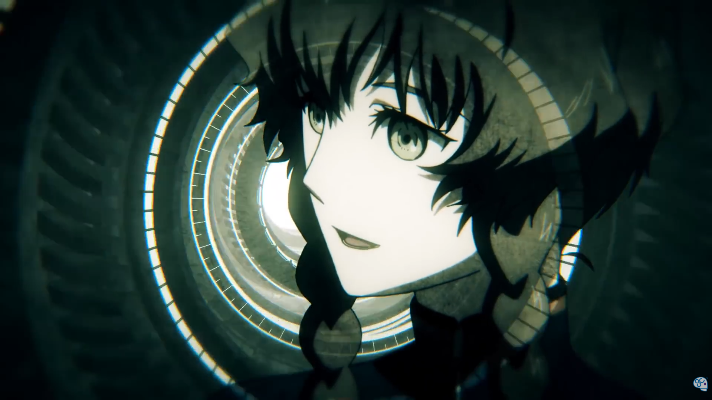
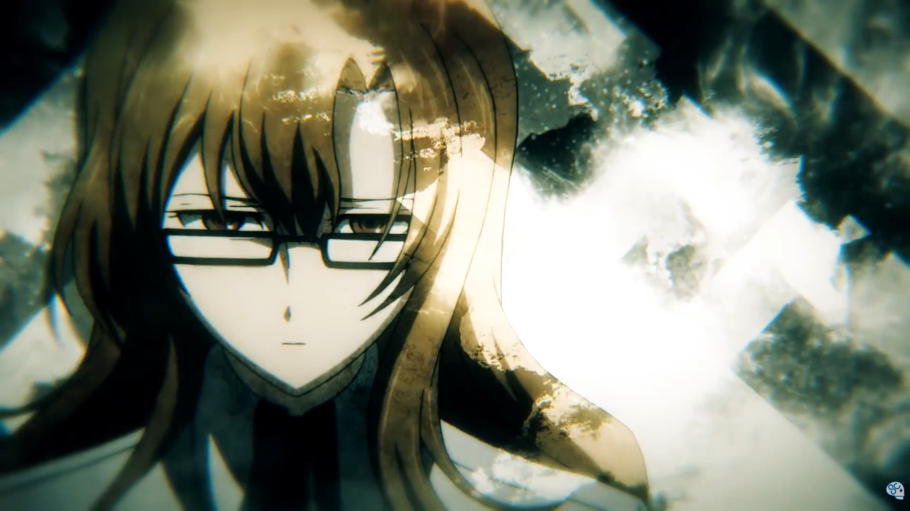
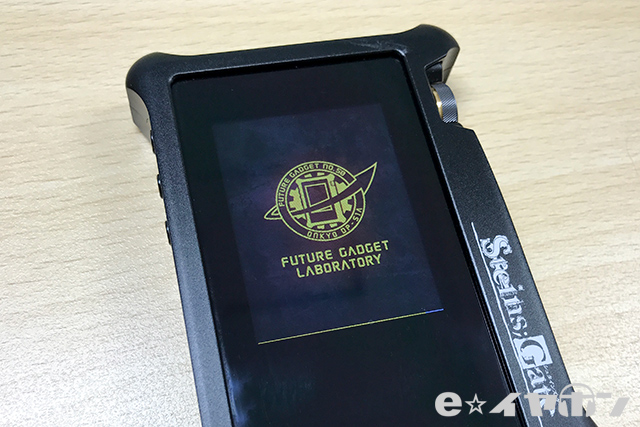
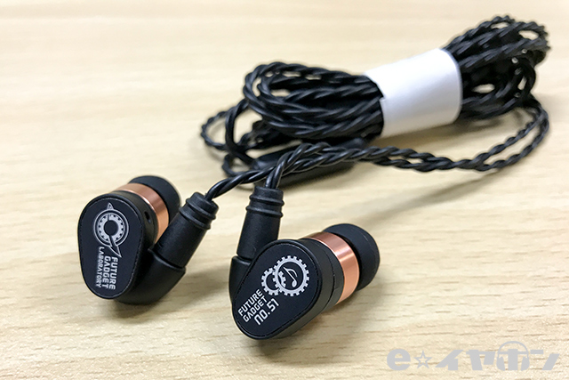

Nueva Colaboracion
Steins;Gate lanza Reproductor y Auriculares Nuevos edición limitada, La franquicia mas aclamada sobre viajes en el tiempo acaba de lanzar sus nuevos productos de la mano de la marca Pionner y Onkyo Se tratan de unos nuevos dispositivos de audio de alta gama. Auriculares in-ear de monitor cableados y un DAP con pantalla LCD y con almacenamiento expandible hasta 2Tb
Sobre Steins;Gate
Un Grupo de amigos realizan experimentos en un autodenominado laboratorio donde combinan distintos aparatos electronicos para obtener interesantes artilugios la mayoria interesantes pero fútiles. Sin embargo un dia sin darse cuenta consiguen crear un aparato capaz de enviar mensajes en el tiempo. mientras mas interes y empeño le dedican al desarrollo de esta tecnología mayores peligros y miradas atraeran de terroristas y entes del gobierno buscando robar su tecnologia. al punto de intentar robarselos y silenciarlos. Nuestro protagonista tendrá que buscar la forma de evitar ser atacados y salvar sus vidas con ayuda de este aparato.

Personajes
Okabe Rintarou
El protagonista de la historia, un joven de 18 años que se autodenomina "científico loco" y es el fundador del "Laboratorio de Aparatos de Akihabara". Es conocido por su personalidad excéntrica, su amor por la ciencia ficción y su tendencia a hablar en un lenguaje grandilocuente. A lo largo de la historia, Okabe se enfrenta a numerosos desafíos mientras intenta proteger a sus amigos y descubrir los secretos detrás de los viajes en el tiempo.

Makise Kurisu
Una brillante científica y experta en neurociencia, Makise es una de las principales protagonistas femeninas de la historia. Es conocida por su inteligencia excepcional, su actitud fría y su habilidad para resolver problemas complejos. A lo largo de la historia, Makise se convierte en una aliada clave para Okabe y desempeña un papel crucial en la investigación de los viajes en el tiempo.

Shiina Mayuri
Una amiga de la infancia de Okabe, Mayuri es una joven dulce y amable que trabaja en una tienda de cosplay. Es conocida por su personalidad alegre y su amor por los disfraces. A lo largo de la historia, Mayuri se convierte en un personaje importante para Okabe, y su bienestar se convierte en una motivación clave para sus acciones.

Hashida Itaru
Conocido como "Daru", es un amigo cercano de Okabe y un experto en informática. Es conocido por su personalidad relajada, su amor por los videojuegos y su habilidad para hackear sistemas informáticos. A lo largo de la historia, Daru desempeña un papel crucial en la investigación de los viajes en el tiempo y en la protección del laboratorio.

Faris NyanNyan
Una joven que trabaja en una maid café y es conocida por su personalidad extrovertida y su amor por los gatos. A lo largo de la historia, Faris se convierte en una aliada importante para Okabe y no hace mucho la verdad, pero tiene buenos contactos.
Suzuha Amane
Una joven que trabaja como repartidora y es conocida por su personalidad enérgica y su habilidad para el combate. A lo largo de la historia, Suzuha se convierte en una aliada importante para Okabe y desempeña un papel crucial en la protección del laboratorio y sus integrantes.

Moeka Kiryuu
Una joven que trabaja como reportera y es conocida por su personalidad reservada y su obsesión por la tecnología. A lo largo de la historia, Moeka se convierte en un personaje importante para Okabe, y su relación con él se vuelve cada vez más compleja a medida que avanza la historia.

Avances del Producto
Reproductor Onkyo
El nuevo reproductor de Onkyo, diseñado en colaboración con Steins;Gate, es un dispositivo de audio portátil de alta gama que ofrece una experiencia auditiva excepcional. Con una pantalla LCD de alta resolución y almacenamiento expandible hasta 2Tb, este reproductor permite a los usuarios disfrutar de su música favorita con una calidad de sonido impresionante. Además, su diseño elegante y compacto lo convierte en el compañero perfecto para los amantes de la música en movimiento.

Auriculares Pionner
Los nuevos auriculares in-ear de monitor cableados de Pionner, diseñados en colaboración con Steins;Gate, ofrecen una calidad de sonido excepcional y un diseño ergonómico para una experiencia auditiva cómoda y envolvente. Con tecnología de cancelación de ruido y una respuesta de frecuencia amplia, estos auriculares permiten a los usuarios sumergirse completamente en su música favorita. Además, su construcción robusta y su diseño elegante los convierten en una opción ideal para los amantes de la música que buscan un rendimiento de alta calidad.
